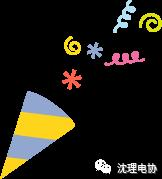
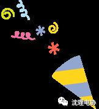

电协和勤协的联谊活动来啦！

电协和勤协的联谊活动来啦！



勤协？电协？好像在哪听过。
什么！？你竟然不知道勤协和电协，那就让我来告诉你吧。


沈阳理工大学勤工俭学协会
成立于1954年，至今已有58年的历史，于2000注册为校级社团，以“用自己的双手，打造一片蔚蓝的天空”为社团励志口号，本社团以服务学生为宗旨，以为在校学生提供兼职工作和社会锻炼机会为目的，每学期都会为协会会员免费提供上百份工作，数百次锻炼机会。

沈阳理工大学电子技术与应用协会
成立于2008年10月，是由校团委社团联合会领导的，一个以学习电子知识为主，培养动手能力的寓教于乐的学术性社团。
社团培养了大量具有电子技术实践经历以及相关电子知识的人才，不仅在高校之间的各种大赛中取得了优异的成绩，而且为社会上的各个招聘企业输送了大量电子技术人才，具有较大社会影响力。


怎么样，这两个社团很厉害吧。而就在明上午十点，这两个社团将会强强联合，在综合楼B区举办一场盛大的联谊活动。光是想想就很期待啊。
电协和勤协的联谊活动将会于明天上午十点在综合楼B区举办，届时希望同学们踊跃参与~
风里雨里，综合楼B等你！
编辑：信息部 康宁

沈理电协
想学技术吗？关注吧！